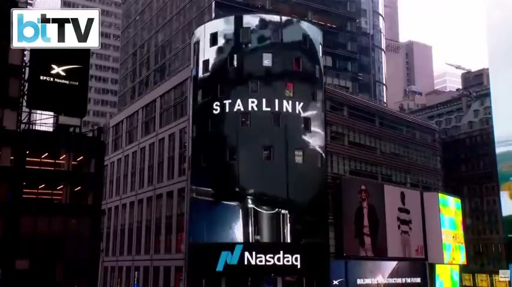

Thesis 01
首富的一兆，押在執行會變便宜
招股書最大的一筆是自動化知識工作，馬斯克也說工作終將可選。訊息一致，會做事這件事，正在變成可以被買、被外包給 AI 的能力。
我的判讀：當全世界最有錢的人都在賭執行被自動化，把價值押在我做得快、我做得完，會越來越危險。
SpaceX 於 2026 年 6 月 12 日在 Nasdaq 掛牌，代號 SPCX，募資約 750 億美元，是史上最大 IPO。本篇事件事實以招股書與 CNBC、Bloomberg 等報導為準，影片為上市當天 Business Today 的現場直播，作為現場參照。




畫面來源：Business Today 上市當天現場直播，2026-06-12
如果只把這當成火箭公司上市，就會看淺。SpaceX 已整併 xAI（Grok）與社群平台 X，這場上市被市場稱為「AI IPO」，招股書宣稱的市場規模約 28.5 兆美元，將近九成歸給 AI。
TOTAL TAM · 28.5 兆美元
整條代表招股書宣稱的 28.5 兆美元總 TAM。橙色區塊是 22.7 兆美元的「用 AI 代理自動化知識工作」，約佔總 TAM 八成。這就是世界首富押注的主戰場。
馬斯克身價約 1.05 兆美元，全球第一位兆美元富豪，是貝佐斯加阿爾諾的兩倍。
募資約 750 億美元，上市目標估值約 1.75 兆美元。
2026 年 2 月併入 xAI（Grok）與社群平台 X，約九成估值來自 AI。
22.7 兆美元的企業應用，招股書定義為用 AI 代理自動化知識工作，約佔 AI 市場八成。
招股書要推的平台，讓自主代理接手整套數位工作流程，從寫程式、產品開發到管理與商業流程。
他公開說過，總有一天不需要任何工作，你想做可以做，為了個人成就感，但 AI 什麼都能做。
把事件放回知識工作者的處境，我整理成四個判讀。
招股書最大的一筆是自動化知識工作，馬斯克也說工作終將可選。訊息一致，會做事這件事，正在變成可以被買、被外包給 AI 的能力。
我的判讀：當全世界最有錢的人都在賭執行被自動化，把價值押在我做得快、我做得完，會越來越危險。
總有一天不需要工作，這是一個願景，目前還沒有明確時間表。在它到來之前，市場會先獎勵那些懂得用 AI、又累積了自己判斷的人。
我的判讀：與其等 AI 把工作做完，不如現在就用 AI 累積別人拿不走的東西。
AI 可以幫你把報告寫完、把流程跑完，但它不會自動知道，對你、對你的客戶、對你這一行，什麼才是對的決定。
我的判讀：判斷是 AI 時代真正稀缺的東西，是你看過夠多案子之後，別人要走很久才追得上的眼光。
這些判斷平常鎖在你腦袋裡，下班就關機，換個工具就要重講一次背景。你每天都在判斷，卻幾乎沒有把它留下來。
我的判讀：把判斷沉澱成一個你自己的知識庫，讓它可以被累積、被檢索、被你的 AI 讀懂並接手執行。
看完我的判讀，把馬斯克和招股書自己的主張，以及各家媒體報導與評論的重點也放上來，正反兩面都給你，讓你自己對照。以下整理自各家媒體報導與評論，原始事件仍以公司公告與 SEC 文件為準。
This preemptive playbook is likely to be replicated for Anthropic and OpenAI.Axios, 2026-06-12
There's no accountability. No checks. No balances.The Guardian 評論, 2026-06-13
資料來源：WSJ、Axios、Business Insider、The Guardian（2026-06-11 至 06-13）。各家對估值、開盤收盤與市值口徑略有差異，以公司公告與 SEC 文件為準。
這篇把身價與估值放在報導數字的位置，把招股書語言放在公司主張的位置。原始事件請回看招股書與各家報導，影片為上市當天現場直播。來源：CNBC、Bloomberg、The Guardian、WSJ、Axios、Business Insider、Decoding Discontinuity、Barchart，2026-06；Business Today YouTube 現場直播，2026-06-12